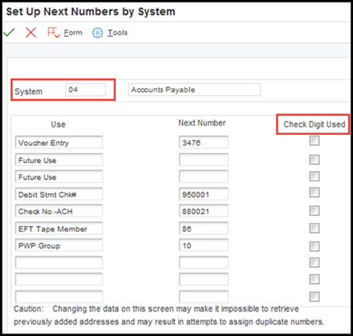
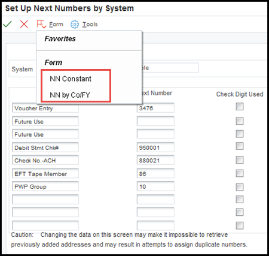
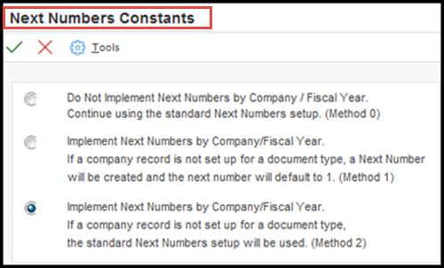
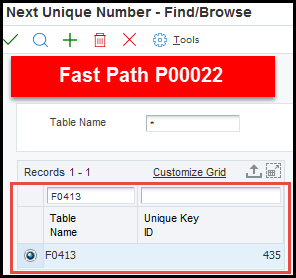
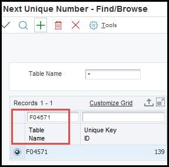

| Purpose |
| Scope |
| Details |
| Set Up Next Numbers |
| Check Digit Used |
| Set Up Next Numbers By Company and Fiscal Year |
| Next Numbers Constants |
| Fiscal Years |
| Same-As Doc Type |
| Imbed Digits |
| Auto Reset |
| Next Numbers for Payment Control Group |
| Implementation Process Releases Xe and ERPR8.0 only |
| Next Number for Payment Control Group - Co-existence |
| Common Next Numbers (P0002) Questions |
| Question 1: Is it possible to retrieve previous configurations of Next Numbers (P0002)? |
| Question 2: What happens if a next number has reached its maximum value (99999999)? |
| Question 3: Check numbers are incorrectly incrementing when creating EFT payments, why? |
This document provides information on Next Numbers Next Numbers by Company for EnterpriseOne Accounts Payable.
This document is intended for EnterpriseOne users who are setting up the Accounts Payable module for use within their organization.
When a program retrieves a next number from the Next Numbers - Automatic table (F0002), it references a specific line in the next number table for the appropriate system. If the next number table becomes damaged or if entries are mistakenly deleted, you must set up the next number for the appropriate program on the specific line. Use fast path NN:
Search by system 04:

This table provides the description of each next number line listed above necessary to create the next number entries for the JD Edwards EnterpriseOne Accounts Payable system:
| Line Number | Description | Function |
|---|---|---|
| 1 | Voucher Entry |
|
| 2 | Future Use |
|
| 3 | Future Use |
|
| 4 | Debit Stmt Chk # |
|
| 5 | Check No.-ACH |
|
| 6 | EFT Tape Member | Provides an number for an electronic funds transfer (EFT). |
The Next Number program can be accessed by either typing NN in the Fast Path, or from the General Systems menu (G00) selecting Setup Next Numbers by System. Next Numbers are used to automatically assign essential numbers throughout the Accounts Payable application. For example, the Document Number (data dictionary item DOC) for vouchers is assigned automatically using the Next Numbers (P0002) program. Next numbers work in conjunction with the Data Dictionary. Each Data Dictionary item that uses Next Numbers contains an index value that corresponds to the line number with the correct Next Number value. The Next Numbers program (P0002) assigns numbers to documents using either one of the following methods:
When using Next Numbers (P0002), the following rules apply:
Check Digit Used Select to specify that the system adds a number to the end of each next number assigned. For example, if you use check digits and the next number is 2, the system adds a check digit such as 7, making the last two numbers 27. The check digits option provides a method for increasing numbers randomly to prevent the assignment of transposed numbers. In this example, the system would never assign next number 72 while the check digits option is activated.
You may want to set up next numbers by Company and Fiscal Year. Below provides how to set up and use the Next Numbers (P0002) by Company and Fiscal Year.
Open the Next Numbers (P0002) program

Select Form Exit and NN Constants

Select one of the following options:

A fiscal year cannot be added to or removed from an existing Next Numbers by Company/Fiscal Year - Automatic (F00021) record. To do so, a user must remove the existing record and create a new one with the desired changes.
Enter a value from UDC table 00/DT (Document Type- All Documents). In certain cases, it is necessary for several Document Types to share a Next Number. For example, Debit Memos (document type PD) should use the same next number sequence as Standard Vouchers (document type PV). Therefore, in the Next Numbers by Co/Fiscal Year (W0002H) form, the record for Document Type (data dictionary item DCT) PD should have the Same-As Doc Type set to PV.
Enter the number of digits that the system places at the beginning of an assigned document number to represent the fiscal year. This field only applies when next numbers are by fiscal year. Valid values are:
Enter the number that the system uses when resetting next numbers for a new fiscal year. This field only applies when next numbers are by fiscal year.
When running Create Payment Control Groups (R04570) for Automatic Payment Processing, the system retrieves next numbers for the Payment Group Control Number field (HDC) in the AP Payment Processing Header File (F04571) during the Accounts Payable payment process and the payment ID (PYID) from the Unique Key table (F00022). Fast path using P00022 and inquire on F0413 and F04571. This feature is included in all releases above ERP8.0.

Inquire on F04571

Answer 1: There is no audit trail for Next Numbers (P0002).
Answer 2: Once the maximum number is reached, the next number is reset to 1. The system will only use next numbers that are available in the system and have not been used for other records. Enhancement Bug 10943887 has been entered requesting a warning message when a next number has reached its maximum.
Answer 3: Check the Special Handling Code (data dictionary item SPHD) for the EFT payments print program (i.e. P04572T2) in UDC table 04/PP (Produce Bank File). To avoid this issue, the Special Handling Code needs to be set to 2.